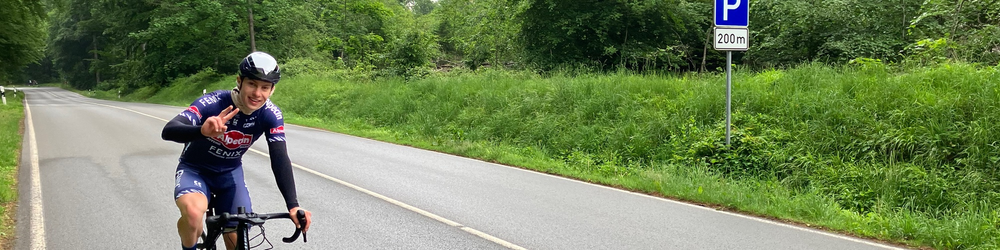

Vattertach – 07:00 Uhr, nasse Strasse, leichter Niesel, den letzten Kaffee in der Hand. Auf gehts mit Dominik. Die Route: Haarstrang, Möhnesee, Hennesee, Winterberg, Lennstadt, Sorpesee. 250 km stehen auf dem Plan. Na immerhin, neuer Regen ist nicht angesagt. Auf gehts über den Haarstrang
Erste Umleitung am Möhnesee. Der östliche Damm ist gesperrt, also geht es direkt über Arnsberg nach Meschede. In Meschede dann auf den schönen Radweg am Hennesee und von dort aus weiter in Richtung Winterberg. Kurz davor erwartet uns die zweite Umleitung. Die zusätzlichen Kilometer sind weniger schlimm als die Tatsache, dass wir uns auf einmal auf der "Autobahn" nach Winterberg befinden. Etwas später lassen wir auch diese hinter uns und fahren am Dirt Bike Festival vorbei nach Schmallenberg.
Kurz hinter Schmallenberg bei km 160, leeren Flaschen und immer leerer werdenden Trikottaschen gibts dann leckere Pommes am Road Stop. Kurze Pause und dann erstmal wieder warm werden. Immer weiter entlang der Lenne bis nach Lennestadt. Dort dann die zweite Umleitung über eine 15% Steigung. Leider sind wir am Ende der Straße in die falsche Richtung abgebogen, was die Tour um ca. 40km verlängerte aber immerhin den Zugang zu einem wunderschönen Radweg ermöglicht hat.
Nach dem Fledermaustunnel erwartete uns dann der letzte Berg. Immerhin 3km bei ca. 6% und noch 70 km zu fahren (aus der 250 km Runde waren nun 300 geworden). Vor der Sorpe noch einmal kurz aufgetankt und dann gemütlich die letzten Kilometer bei erfrischendem Westwind genossen.
Es bleiben ein paar Erkenntnisse:
- Die Pro One Reifen von Schwalbe rollen wirklich butterweich.
- Ein kleiner Fahrer gibt wenig Windschatten.
- Man kommt ziemlich weit, wenn man von Anfang an isst und trinkt.
- Das Synapse ist wirkich ein Endurance Rad. Nur der Nacken tat etwas weh.